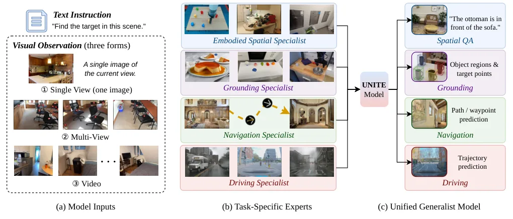
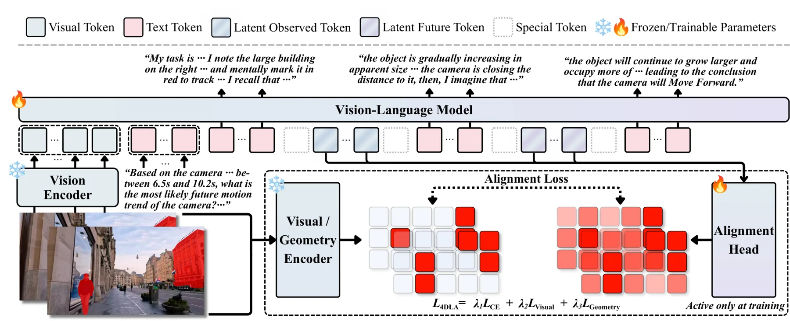
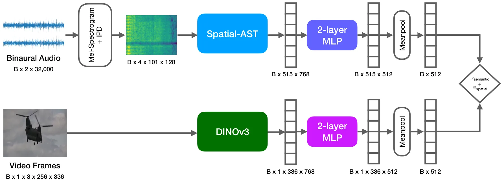
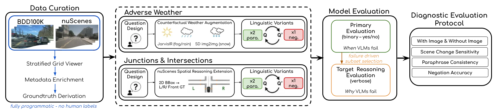

新论文 · 日期 2026-11-16 · score 9 · A层 · Embodied Navigation / VLN / Spatial Reasoning · cs.LG, cs.CV
内容级别：半海报
作者：Tao Tao, Anke Tang, Enneng Yang, Zhi Hou
评分 9.2/10
模型合并MoE 路由一比特量化具身 VLMR2R存储压缩
一句话工作总结：一句话：它把“多个专家之间的差异”从共享权重里剥离出来，压成一比特残差，再用一个极小的路由器决定哪个 token 走哪个专家。真正值得抄的是它的分阶段拆账（专家构造 → 一比特压缩 → 路由适配）和“锚点也参与优化”这个反直觉的小改动：固定锚点时一位残差无法补偿行的单尺度限制，把锚点当变量能把重建误差再降 20–22%。
具身任务（视觉定位、空间推理、导航、驾驶理解）通常是各自微调一个 VLM，得到一组共享架构、共享初始化的稠密专家。并排部署会让存储随任务数线性增长（四个 Qwen3-VL-8B 专家占 70.1 GB），静态合并成一个稠密模型又会因任务更新冲突而掉点（导航专家 R2R Val-Unseen 成功率 57.5%，六种静态合并方法最高只有 55.2%）。UNITE 沿用 Branch-Train-MiX 的构造：每个专…
Embodied capabilities such as visual grounding, spatial reasoning, navigation, and driving understanding are often developed in separate vision-language specialists fine-tuned from a common pretrained model.De…

新论文 · 日期 2026-11-13 · score 9 · A层 · Embodied Navigation / VLN / Spatial Reasoning · cs.AI, cs.CV
内容级别：半海报
作者：Jie Hu, Yu Zheng, Wenzhi Wu, Weixing Feng
评分 8.8/10
无障碍导航基准数据集可通行性高斯重建多 embodiment安全评估
一句话工作总结：一句话：它把“能不能走”从场景标签改成“谁在走”的标签，并用可编辑重建场景把这个条件化过程规模化。对我们最有用的不是分数，而是它的标注策略——按“用户身体体积与障碍求交”确定相关性——这是一条可以用我们自己的机器人尺寸自动执行的几何规则。
论文主张可通行性不是场景的固有属性，而是随使用者与 embodiment 变化：同一道矮栏杆对人形机器人可通过、对视障者是高风险、对轮椅使用者是不可通行。现有基准大多固定一个 agent、用“到达目标且不碰撞”作为成功判据，无法表达这种差异。VLAN 用 1,000 个场景、20K 条轨迹、160K 关键帧构造基准：先把自视角视频重建为高斯场景并导入 Unity 做可编辑环境，再按五类用户（人形、四足、无人机、视障…
Accessible mobility is user-conditioned rather than scene-intrinsic, as walkable paths for one embodiment are inaccessible to another. Yet, existing benchmarks evaluate traversability under a fixed and limited…

新论文 · 日期 2026-11-16 · score 8 · A层 · Embodied Navigation / VLN / Spatial Reasoning · cs.RO
内容级别：半海报
作者：Kangjie Zhou, Sukai Wang, Yuhan Xiao, Qinghang Liu
评分 8.4/10
VLN-CE闭环验证误差恢复锚点回退R2R-CERxR-CE
一句话工作总结：一句话：它不再相信执行器自己说“到了”，而是让另一个模型看着执行历史判定，并把通过验证的状态冻结成可以回退的锚点。可借的核心是“可信锚点 + 视角重选”这套恢复协议：它把误差恢复从“从偏掉的状态继续规划”改成“回到已知好状态再重试”，代价是路径效率下降（SPL 掉），换来完成率上升。
长程视觉语言导航的难点在于进度跟踪与误差恢复：执行器在专家轨迹上训练，部署时会遇到策略诱发的状态偏移，而它的 STOP 信号并不能可靠表示子任务完成。LeaP-VLN 把系统做成 plan–execute–verify–recover 闭环：高层多模态 agent 把路线指令拆成子任务，独立验证器在每次 STOP 时判断“已完成 / 未完成但仍在路线上 / 已偏离”三态，只有验证通过才推进并把终点存为可信锚点；判定…
Long-horizon vision-language navigation (VLN) requires agents to track instruction progress and recover from local errors before they propagate across subtasks. However, executors trained on expert trajectorie…

新论文 · 日期 2026-11-15 · score 7 · A层 · Embodied Navigation / VLN / Spatial Reasoning · cs.CV
内容级别：半海报
作者：Rongxin Gao, Dongxuan Liu, Chu Li, Chengyang Ji
评分 9.4/10
4D 表征隐状态推理几何对齐Pi3X动态空间推理数据引擎
一句话工作总结：一句话：它把“未来几秒的空间演化”压进一串被几何特征锚住的隐状态，从而让 VLM 不再靠外部工具做 4D 推理。对我们的直接价值不是它的问答分数，而是“用几何基础模型的特征去约束隐状态”这条监督路径——它等价于把几何先验注入学习表征，而不是在推理时外挂一个 BA 或深度模块。
论文处理单目视频上的动态空间推理：模型不仅要理解“已经发生了什么”，还要在观测结束后预测“接下来会怎么演化”。作者先做一个自动数据引擎 Pros4D-Engine：用 Qwen3.8 挑出运动物体与静态地标，用 WAFT 光流给出点提示，由 SAM3 逐帧传播掩码，再用 DA3 恢复几何，把掩码深度映射到同一 3D 坐标系，按相机中心、物体质心、地标位置生成八类问题（相机方向/相机-物体距离/物体方向/物体间距离/…
Dynamic spatial reasoning from monocular video enables vision-language models (VLMs) to understand how 3D environments evolve over time, supporting physical world understanding and embodied intelligence. Exist…

新论文 · 日期 2026-11-15 · score 7 · A层 · Embodied Navigation / VLN / Spatial Reasoning · cs.CV
内容级别：半海报
作者：Mengyu Yang, You Zhang, Vishnu Raj, Olha Townsend
评分 6.8/10
空间音频音视频对齐合成监督单目深度对比学习CROC
一句话工作总结：一句话：它用“几何估计 + 渲染”把没有空间标注的单声道数据变成有空间监督的数据。这个“用估计几何生成监督”的套路与我们做伪标签训练同源：代价是标签精度上限由深度估计决定，收益是数据规模可以放大两个数量级。
论文要同时做语义与空间两类音视频推理。现实是：带空间音频的数据极少，只在空间数据上训练的模型泛化差；只用单声道数据的语义模型又完全丢失空间信息。作者的做法是先补数据：用现成的音视频分割模型定位发声物体，用单目深度估计得到它的相对 3D 轨迹，再用双耳渲染器把单声道音源放进虚拟 3D 空间，从而把 VGGSound 的 18.1 万条视频“空间化”。训练上用对比学习，并设计 CROC 增强：裁掉画面一侧让物体在画面中…
Comprehensive audio-visual perception requires both semantic and spatial reasoning. Existing spatial models suffer from poor generalization due to data scarcity, while semantic-only models fail to capture spat…

新论文 · 日期 2026-11-14 · score 7 · A层 · Embodied Navigation / VLN / Spatial Reasoning · cs.CV
内容级别：半海报
作者：Shankar Gangisetty, Muskan Singh, C V Jawahar
评分 7.4/10
VLM 评测视觉 grounding反事实鲁棒性否定推理BDD100KDriveLM
一句话工作总结：一句话：它不是又一个驾驶问答榜，而是一套“拆穿高分”的对照实验设计——把图拿掉、把天气换掉、把句子改写或否定，看答案是否还站得住。这套四联对照可以直接移植到我们的评测里：任何声称“用了视觉”的模块，都应该在无输入与反事实输入下各测一遍。
论文质疑“问答准确率高就代表视觉推理可靠”这一默认前提，提出一套诊断式评测，专门探测模型是依据视觉证据还是语言先验、答案偏置与数据规律作答。基准含两类任务：恶劣天气与路口/交叉口，并加了 nuScenes 空间推理扩展；评测六个开源 VLM，沿四条诊断协议：有图 vs 无图、反事实天气敏感性、同义改写与否定下的语言鲁棒性、空间推理。所有真值都由 BDD100K 与 DriveLM 的标注经确定性函数导出，不需要人工…
Vision-language models (VLMs) are increasingly being evaluated for autonomous driving through question-answering benchmarks, yet high benchmark accuracy does not necessarily reflect visually grounded reasoning…